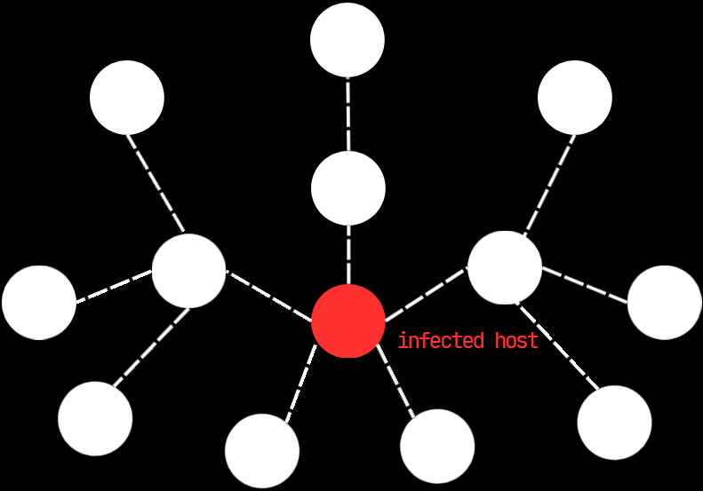

what
why
how
which
when
who
shardnet
traditional AV waits hours
for centralized corporate
servers to push signature
updates. that's a death
sentence.
when blackshard detects an
unknown threat, it gossips a
signature ("shard") to all of
the users in shardnet.
